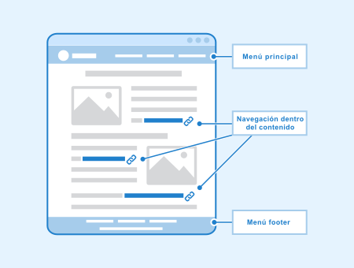
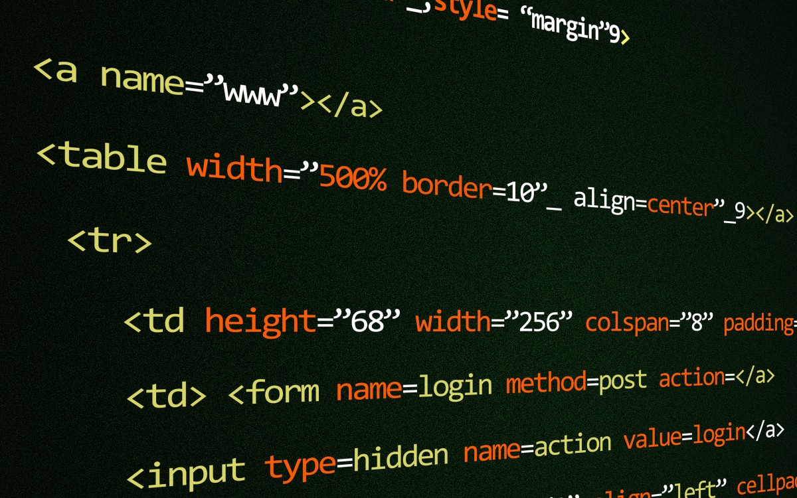
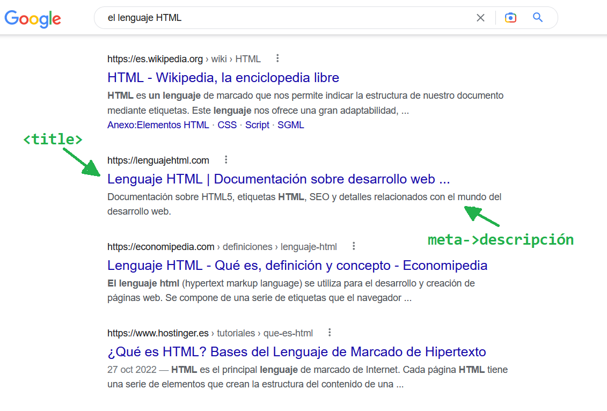

Para poder mostrar la información deseada en la web debemos utilizar un nuevo lenguaje: el lenguaje HTML, que aprenderás en este recurso. HTML es un lenguaje de marcado que utiliza unos comandos llamados etiquetas para crear una estructura que describe el contenido de un documento. Esto nos proporciona una gran ventaja porque permite añadir semántica (significado) al documento que una máquina puede entender.
Veamos cómo funciona este proceso y qué utiliza:
¿Cuáles son los pasos de creación de una web?
En el fondo, crear una página web en HTML, no es muy diferente a crear cualquier otro documento con un editor de texto. Consiste en crear un fichero con extensión .html o .htm y editarlo. A partir de aquí, los pasos que vamos a seguir para el diseño de nuestra web serán:
- Elegir el editor más adecuado según la complejidad de la página.
- Crear la estructura básica de la página: la cabecera y el cuerpo.
- Crear el contenido y aplicarle formato con las etiquetas HTML: títulos, párrafos de texto, enlaces, imágenes, tablas, audio y vídeo embebido, etc.
- Integrar también los elementos interactivos, si son necesarios (formularios).
- Implementar, en su caso, en el servidor la lógica para responder a los formularios.
- Publicar (hacer visible) la página en Internet.
¿Qué son las etiquetas?
Lo primero que te llamará la atención en una programación web son las palabras entre los símbolos < >. Las palabras que hay entre estos símbolos son las etiquetas HTML.
Estas etiquetas se pueden anidar entre ellas, sin límite, formando una estructura jerárquica. Siempre hay una etiqueta de apertura y otra de cierre que es la misma etiqueta, pero con una barra delante del nombre de la etiqueta. Por ejemplo: (etiqueta de cierre que delimita el final del contenido etiquetado).
En medio viene un texto u otras etiquetas anidadas que con su contenido. El conjunto de una etiqueta y su contenido se conoce como elemento HTML.
A veces, una etiqueta no tiene contenido en texto como tal (por ejemplo, las etiquetas meta, que más delante verás para qué se utilizan). En ese caso, no hace falta usar una etiqueta de cierre:
<meta name="description" content="En este apartado…">
¿Qué nos aportan?
Conseguimos semántica, es decir, que el contenido tenga sentido para el navegador u otras aplicaciones, siendo el buscador de Google una de las más destacadas. Veamos dos ejemplos:
Ejemplo: la etiqueta title
Observa este uso:
Con esta etiqueta le estamos diciendo al navegador que se trata del título de la página, el que va a visualizar en la pestaña en la que tienes abierta esta página dentro del navegador.
Además, cuando Google visita tu web el texto etiquetado con la etiqueta title será el que utilice como título en sus resultados de búsqueda.
Ejemplo: la etiqueta meta
Observa que la etiqueta meta antes del corchete de cierre contiene palabras con un formato de xxx=”yyy”. Esto son los atributos, donde xxx es el nombre del atributo e yyy su valor.
name="description" content="En este apartado…"
Aquí, con el atributo name estamos diciendo concretamente que se trata de una etiqueta meta que sirve como descripción de la página y que la descripción concreta es la que viene en el atributo content.
Observa en la siguiente imagen el resultado del uso de estas dos etiquetas vistas en las búsquedas de información en Internet:

Es una forma de codificar un documento que, junto con el texto, incorpora etiquetas o marcas que contienen información adicional acerca de la estructura del texto o su presentación.